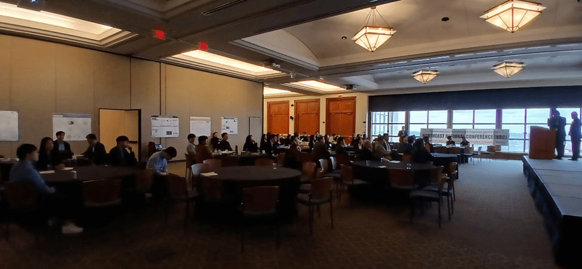
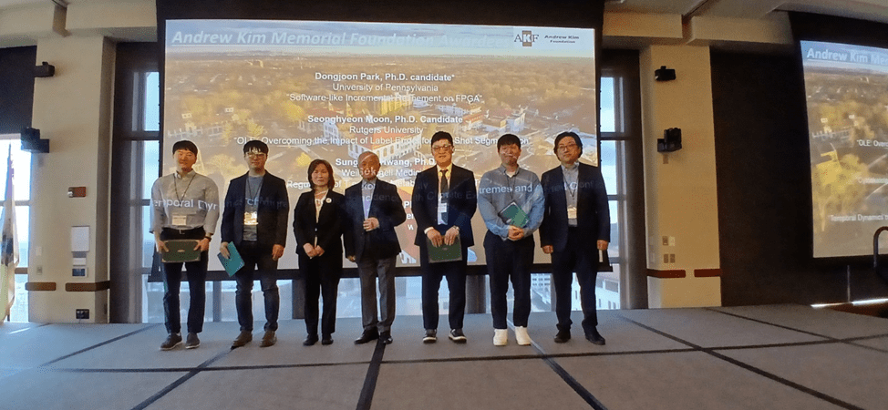
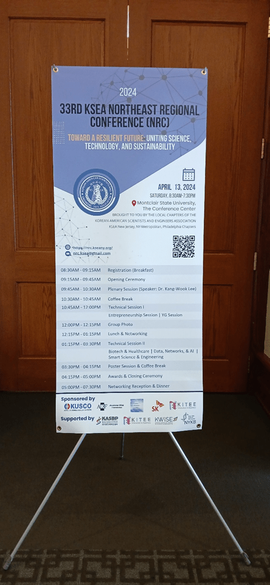
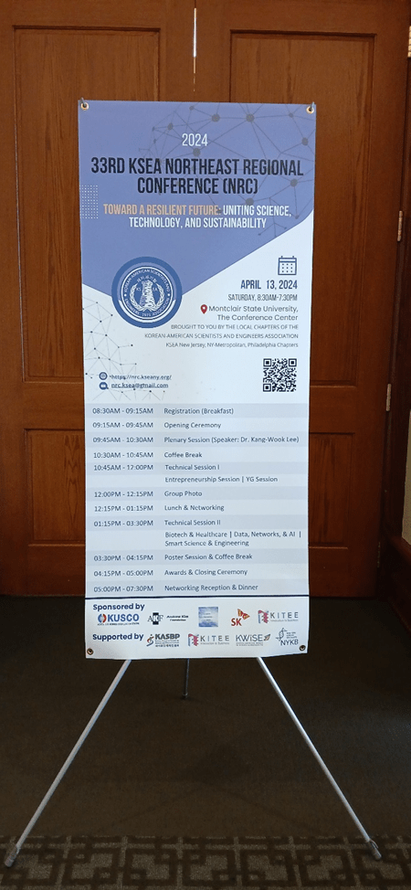

Events
Stay tuned for upcoming events. Here's a look at one of our recent gatherings.
KSEA Philadelphia Chapter Fall Membership Drive & UPenn KoGSA New Student Welcome
Date: Fall 2025
Location: University of Pennsylvania
KSEA Philadelphia Chapter joined the UPenn KoGSA New Student Welcome event to introduce KSEA to new graduate students and encourage membership. This event served as a membership drive to connect with the next generation of scientists and engineers.
PKSA & KKYU Joint Seminar Series
Date: 2025
Location: Philadelphia, PA
A joint seminar series organized in collaboration with PKSA (Philadelphia Korean Scholars Association) and KKYU. This series featured research presentations and discussions to foster academic exchange among members.
34th Northeast Regional Conference (NRC)
Date: April 26, 2025
Location: DoubleTree Hotel, Fort Lee, NJ
Theme: "Innovating the Future: AI, Healthcare, and Digital Transformation"
The NRC 2025 provided a vibrant forum for knowledge sharing, collaboration, and innovation, encouraging interdisciplinary dialogue among leaders from academia, industry, and government. The event featured keynote addresses by distinguished speakers, technical sessions, panel discussions, and networking opportunities, promoting research and professional advancement between the USA and Korea.

Group photo of the 34th Northeast Regional Conference (NRC) on April 26, 2025.
33rd Northeast Regional Conference (NRC)
Date: April 13, 2024
Location: Montclair State University, NJ
Theme: "Toward a Resilient Future: Uniting Science, Technology, and Sustainability"

The 33rd Northeast Regional Conference (NRC) 2024 was jointly organized by the New Jersey, New York Metropolitan, and Philadelphia Chapters of Korean-American Scientists and Engineers Association (KSEA). This year NRC was sponsored by nonprofit organizations, KSEA and the Korea-U.S. Science Cooperation Center (KUSCO), and it was held in the collaboration with local societies and KSEA-affiliated professional societies (APSs), including KASBP, KITEE, KWiSE, NYKB, and PKSA.
Since the COVID-19 pandemic, individuals and communities worldwide have demonstrated remarkable resilience and innovation. As we embark on a journey to explore innovative solutions, we aim to harmonize scientific advancement, technological prowess, and sustainable practices in overcoming the challenges of tomorrow. Therefore, the NRC 2024, held at Montclair State University in New Jersey, is centered around the theme of “Toward a Resilient Future: Uniting Science, Technology, and Sustainability.”
The conference aims to provide an opportunity for individuals to learn from each other and explore new strategies for building partnerships, and redesigning structures in a more resilient and sustainable manner. We are confident that the insights and ideas shared at this conference will inspire us to create a brighter future for our communities and societies, contributing to advancing research and development in both the U.S. and Korea. In addition, the NRC 2024 will allow young generations (YG) and professionals (YP) in science and engineering to establish professional networks and explore career opportunities.


 

On behalf of the NRC organizing committee, Yeon Bai, Ph.D. (Conference Chair) and Jinwook Lee, Ph.D. (Conference Co-Chair) would like to express sincere gratitude to all the distinguished guests and KSEA members from New Jersey, New York Metropolitan, and Philadelphia for participating in NRC 2024.
32nd Northeast Regional Conference (NRC)
Date: April 29, 2023
Location: Montclair State University, NJ
The Philadelphia chapter co-hosted the 32nd NRC with the theme "Rebuilding with Resilience." The conference focused on promoting technical excellence and service, championing the future of various scientific and engineering fields.
KSEA Philadelphia and New Jersey – KITEE Networking Event
Date: February 22, 2023
Location: Han Dynasty, Cherry Hill, NJ
KSEA Philadelphia Chapter, New Jersey Chapter, and KITEE (Korean-American Innovative Technology Engineers and Entrepreneurs), an APS of KSEA, jointly held a networking event. The event aimed to promote networking and collaboration among KSEA and KITEE members in the Philadelphia and South/Central NJ area, and to recruit new members and bring out inactive members to connect with KSEA again.

A group photo of the KSEA-KITEE Networking Dinner on February 22, 2023.